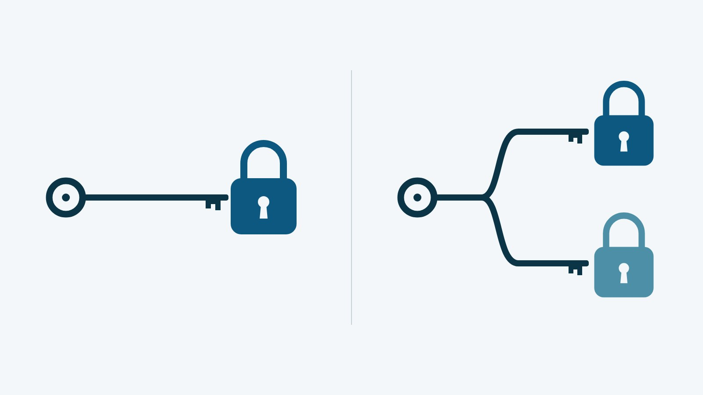

Mounjaro® чи Ozempic®: чим відрізняються тирзепатид і семаглутид

Mounjaro® чи Ozempic®: коротка відповідь
Питання «Mounjaro® чи Ozempic®» стосується двох різних молекул, які вводять під шкіру раз на тиждень: тирзепатид (Mounjaro®) діє на рецептори двох гормонів, GIP і GLP-1, а семаглутид (Ozempic®) лише на рецептори GLP-1. Офіційні показання теж різні: в Україні Ozempic® призначений при діабеті 2 типу, а Mounjaro® за європейською інструкцією показаний і при діабеті 2 типу, і для контролю маси тіла.
У прямому дослідженні SURMOUNT-5 тирзепатид знизив вагу більше, ніж семаглутид, але семаглутид там застосовували в дозах Wegovy®, а не Ozempic®. Який препарат доречний конкретній людині, вирішує лікар.
Механізм: один рецептор чи два
Амінокислотна послідовність семаглутиду на 94 % збігається з людським GLP-1, і він діє як агоніст рецепторів GLP-1. Тирзепатид вмикає рецептори двох власних гормонів людини: на рецептор GIP діє приблизно як власний GIP, а на рецептор GLP-1 слабше, ніж власний GLP-1. Кожну молекулу докладно описують статті про семаглутид і тирзепатид.
Спільного в них багато. Обидва глюкозозалежно посилюють секрецію інсуліну і знижують рівень глюкагону, зменшують апетит і тягу до жирної їжі, уповільнюють випорожнення шлунка.

За доклінічними даними, на які посилається американська інструкція тирзепатиду, GIP може додатково впливати на регуляцію споживання їжі. Пряме порівняння SURMOUNT-5 показує різницю між двома препаратами, але не дозволяє приписати її саме рецептору GIP: молекули відрізняються не лише кількістю рецепторів.
Офіційні показання: різні препарати, різні інструкції
Показання двох препаратів у цій статті взяті з різних документів. Для Ozempic® це українська інструкція (МОЗ, дата останнього перегляду 15.07.2026), де показання одне: недостатньо контрольований цукровий діабет 2 типу. Для Mounjaro® це європейська інструкція (EMA SmPC) з двома показаннями: діабет 2 типу в дорослих, підлітків і дітей від 10 років і контроль маси тіла в дорослих з індексом маси тіла (ІМТ) від 30 кг/м² або від 27 кг/м² за наявності хвороби, пов'язаної з вагою.
[РЕШЕНИЕ ВЛАДЕЛЬЦА: питання №2]
Для контролю маси тіла в Україні зареєстрований інший препарат семаглутиду: Wegovy® ФлексТач® (з 2024 року, дози до 2,4 мг). Тому за показаннями тирзепатид для контролю ваги коректніше порівнювати з Wegovy®, ніж з Ozempic®. Саме так побудоване і пряме дослідження.
Пряме порівняння: дослідження SURMOUNT-5
SURMOUNT-5 (NEJM, 2025) — відкрите дослідження фази 3b. У ньому 751 дорослий з ожирінням або з надмірною вагою та щонайменше однією пов'язаною з вагою хворобою, без діабету 2 типу, протягом 72 тижнів отримував раз на тиждень тирзепатид або семаглутид у максимальній переносимій дозі: 10 чи 15 мг і 1,7 чи 2,4 мг відповідно. За даними EMA, учасникам було в середньому 44,7 року, середній ІМТ становив 39,4 кг/м², жінок було 64,7 %.
| Показник за 72 тижні | Тирзепатид 10–15 мг | Семаглутид 1,7–2,4 мг | Джерело |
|---|---|---|---|
| Зміна маси тіла | −20,2 % | −13,7 % | NEJM, 2025 |
| Те саме, інший метод розрахунку | −21,6 % | −15,4 % | інструкція EMA Mounjaro® |
| Зміна обхвату талії | −18,4 см | −13,0 см | NEJM, 2025 |
| Нудота | 43,6 % | 44,4 % | огляд Lilly Medical, 2025 |
| Блювання | 15,0 % | 21,3 % | огляд Lilly Medical, 2025 |
| Реакції в місці ін'єкції | 8,6 % | 0,3 % | огляд Lilly Medical, 2025 |
| Алопеція (випадіння волосся) | 8,3 % | 6,1 % | огляд Lilly Medical, 2025 |
| Припинили лікування через небажані явища | 6,1 % | 8,0 % | огляд Lilly Medical, 2025 |
За розрахунком EMA, різниця у зниженні маси тіла становила 6,2 відсоткового пункта на користь тирзепатиду. Дані про небажані явища, тобто про всі зафіксовані події незалежно від їхнього зв'язку з препаратом, наведені за оглядом Lilly Medical, медичної служби виробника тирзепатиду. Нудота, діарея (23,5 % і 23,4 %) і закреп (27,0 % і 28,5 %) траплялися з подібною частотою; блювання і припинення лікування через небажані явища частіше були в групі семаглутиду, а реакції в місці ін'єкції та алопеція — в групі тирзепатиду.
Як читати ці дані:
- семаглутид застосовували в дозах Wegovy® (1,7 або 2,4 мг), а не Ozempic® (за українською інструкцією до 1 мг на тиждень), тому переносити ці числа на Ozempic® не можна;
- дослідження відкрите: учасники і лікарі знали, хто який препарат отримує;
- людей з діабетом 2 типу в дослідження не включали, тож для них воно відповіді не дає;
- це середні значення груп, а не прогноз для конкретної людини.
Інші дослідження SURMOUNT описані у статті про результати Mounjaro®.
Порівняльна таблиця за інструкціями
| Ознака | Ozempic® (семаглутид) | Mounjaro® (тирзепатид) |
|---|---|---|
| Джерело | українська інструкція, ред. 15.07.2026 | європейська інструкція (EMA SmPC) |
| Офіційні показання | цукровий діабет 2 типу | діабет 2 типу; контроль маси тіла в дорослих |
| Період напіввиведення | близько 1 тижня | близько 5 днів |
| Як вводять | під шкіру раз на тиждень: живіт, стегно або плече | під шкіру раз на тиждень: живіт або стегно; у плече вводить лише інша людина |
| Дози | 0,25; 0,5 і 1 мг, понад 1 мг не рекомендовано | від 2,5 до 15 мг |
| Ручка | багатодозова, для кожної ін'єкції нова голка | одноразова автоматична з прихованою голкою або KwikPen на 4 дози |
| Протипоказання | лише підвищена чутливість; у США також медулярний рак щитоподібної залози в особистому чи сімейному анамнезі або синдром множинної ендокринної неоплазії 2 типу (MEN 2) | так само, як в Ozempic® |
| Перед запланованою вагітністю | відміняють щонайменше за 2 місяці | відміняють щонайменше за 1 місяць |
| Годування груддю | не застосовують | застосування можна розглядати |
| Таблетовані контрацептиви | зниження ефективності не очікується | в ЄС корекція не потрібна; у США і NICE радять перейти на неоральний метод або додавати бар'єрний на 4 тижні після старту і кожного підвищення дози |
За інструкціями обох препаратів найчастіші побічні реакції стосуються травлення: нудота і діарея трапляються дуже часто, переважно в перші місяці лікування (Ozempic®) і під час підвищення дози (Mounjaro®). Серед нечастих, але серйозних реакцій обидві інструкції називають гострий панкреатит: при підозрі на нього препарат відміняють. Повні переліки є у статтях про побічні ефекти Ozempic® і Mounjaro®.
Чому препарат обирає лікар
Європейська асоціація з вивчення ожиріння (EASO) у 2025 році опублікувала алгоритм вибору ліків від ожиріння (Nature Medicine). Тирзепатид і семаглутид 2,4 мг (доза Wegovy®, не Ozempic®) у ньому названі препаратами вибору, коли потрібне значне зниження маси тіла, а першу лінію пропонують підбирати за ускладненнями:
- обструктивне апное сну: тирзепатид;
- остеоартрит колінного суглоба: семаглутид 2,4 мг;
- предіабет або діабет 2 типу: тирзепатид або семаглутид 2,4 мг;
- перенесене серцево-судинне захворювання: семаглутид 2,4 мг;
- серцева недостатність: тирзепатид або семаглутид 2,4 мг;
- стеатотична хвороба печінки, пов'язана з метаболічною дисфункцією (MASLD): у 2025 році тирзепатид; в оновленні 2026 року за усуненням стеатогепатиту (MASH) тирзепатид і семаглутид 2,4 мг поруч, а щодо фіброзу печінки докази сильніші для семаглутиду.
Вибір семаглутиду після серцево-судинного захворювання підкріплює SELECT (NEJM, 2023): у людей без діабету з ІМТ від 27 і серцево-судинною хворобою семаглутид 2,4 мг знизив відносний ризик серйозних серцево-судинних подій на 20 %. В оновленні EASO 2026 року тирзепатид залишився вище за семаглутид 2,4 мг за загальним зниженням маси тіла. Автори EASO наголошують, що жоден алгоритм не замінює клінічного судження лікаря.
[КОММЕНТАРИЙ ВРАЧА: які 2–3 чинники найчастіше визначають вибір між тирзепатидом і семаглутидом на консультації]
Часті запитання
Що відбувається з вагою після відміни препарату?
У дослідженнях SURMOUNT-4 (JAMA, 2024; тирзепатид) і STEP 4 (JAMA, 2021; семаглутид 2,4 мг) після переходу на плацебо вага поверталася, а при продовженні лікування продовжувала знижуватися. Цифри і те, як завершення терапії планують з лікарем, описані у статті про вагу після відміни GLP-1.
Чи потрібно попереджати лікарів про терапію перед операцією?
Так. Інструкції обох препаратів описують випадки легеневої аспірації під час загального наркозу або глибокої седації: через уповільнене випорожнення шлунка в ньому може залишатися вміст. Про терапію заздалегідь повідомляють лікаря, який планує процедуру; чи потрібна пауза, вирішують лікарі, а самостійно препарат не відміняють.
Чи можна поєднувати ці препарати з іншими ліками від діабету?
За обома інструкціями, при поєднанні з метформіном або інгібіторами SGLT2 їхню дозу можна не змінювати. З інсуліном або сульфонілсечовиною зростає ризик гіпоглікемії, тому лікар може зменшити дозу цих ліків.
Чи можна обрати препарат самостійно, наприклад за онлайн-тестом?
Ні. Ozempic® в Україні відпускається за рецептом, Mounjaro® у ЄС теж рецептурний, а вибір залежить від показань, протипоказань і супутніх хвороб, які оцінює лікар. Тест на схуднення на сайті оцінює ІМТ, талію і фактори ризику та допомагає підготуватися до розмови з лікарем, але препарат не призначає.
Що далі
Перед консультацією корисно зібрати те, що лікар зважує для безпеки терапії:
- список усіх ліків, які ви приймаєте, включно з ліками від діабету (з інсуліном або сульфонілсечовиною зростає ризик гіпоглікемії) і контрацептивами;
- вагу, зріст і обхват талії;
- відомості про панкреатит, хвороби травного тракту і діабетичну ретинопатію, якщо вони були;
- плани щодо вагітності і заплановані операції.
В Avelis Clinic консультація ендокринолога онлайн і безкоштовна. Лікар оцінює показання, за потреби призначає аналізи, а далі веде курс і коригує дозу.
Джерела
- Aronne LJ et al. Tirzepatide as Compared with Semaglutide for the Treatment of Obesity (SURMOUNT-5). N Engl J Med, 2025;393(1):26–36. https://doi.org/10.1056/NEJMoa2416394
- SURMOUNT-5 overview. Lilly Medical (Brasil), 04.09.2025. https://medical.lilly.com/br/products/respostas/surmount-5-overview-281016
- Mounjaro: EPAR — Product Information. EMA. https://www.ema.europa.eu/en/documents/product-information/mounjaro-epar-product-information_en.pdf
- Інструкції для медичного застосування ОЗЕМПІК® 0,25 мг/0,5 мг і 1 мг. МОЗ України. http://www.drlz.com.ua/ibp/lz_www.nsf/id/2D837A4C00C398AB42258E2C00345419/$file/UA191760101_304C.mht
- Інструкція для медичного застосування ОЗЕМПІК® (шприц-ручка 1 мг), дата останнього перегляду 15.07.2026. МОЗ України. http://www.drlz.com.ua/ibp/lz_www.nsf/id/4513FF4967F3CA9142258E3C0033EB31/$file/UA191760101_BA8B.pdf
- ВЕГОВІ® ФЛЕКСТАЧ®, реєстраційне посвідчення UA/20617/01/01–05. Державний реєстр лікарських засобів України. http://www.drlz.com.ua/ibp/ddsite.nsf/all/shlz1?opendocument&stype=0A4112B68E38398EC2258E92001BA7C9
- OZEMPIC (semaglutide) injection: Prescribing Information. FDA, DailyMed, Revised 06/2026. https://dailymed.nlm.nih.gov/dailymed/drugInfo.cfm?setid=adec4fd2-6858-4c99-91d4-531f5f2a2d79
- ZEPBOUND (tirzepatide): Prescribing Information. Eli Lilly, FDA, DailyMed, Revised 08/2026. https://dailymed.nlm.nih.gov/dailymed/drugInfo.cfm?setid=487cd7e7-434c-4925-99fa-aa80b1cc776b
- Overweight and obesity management (NICE NG246). NICE, 2025, оновлено 08.01.2026. https://www.nice.org.uk/guidance/ng246/chapter/Medicines-and-surgery
- McGowan B, Ciudin A et al. Framework for the pharmacological treatment of obesity and its complications from the European Association for the Study of Obesity (EASO). Nat Med, 2025;31:3229–3232. https://www.nature.com/articles/s41591-025-03765-w
- Ciudin A et al. Framework for the pharmacological treatment of obesity and its complications from the EASO: 2026 update. Nat Med, 2026;32:1962–1966. https://www.nature.com/articles/s41591-026-04397-4
- Lincoff AM et al. Semaglutide and Cardiovascular Outcomes in Obesity without Diabetes (SELECT). N Engl J Med, 2023;389(24):2221–2232. https://doi.org/10.1056/NEJMoa2307563
- Aronne LJ et al. Continued Treatment With Tirzepatide for Maintenance of Weight Reduction in Adults With Obesity: The SURMOUNT-4 Randomized Clinical Trial. JAMA, 2024;331(1):38–48. https://doi.org/10.1001/jama.2023.24945
- Rubino D et al. Effect of Continued Weekly Subcutaneous Semaglutide vs Placebo on Weight Loss Maintenance in Adults With Overweight or Obesity: The STEP 4 Randomized Clinical Trial. JAMA, 2021;325(14):1414–1425. https://doi.org/10.1001/jama.2021.3224
Матеріал має інформаційний характер і не замінює консультацію лікаря. Препарати призначає лікар після консультації.
Читайте також